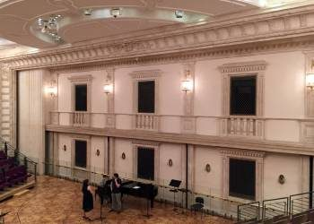
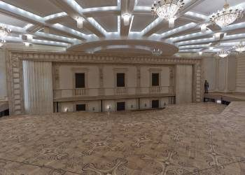
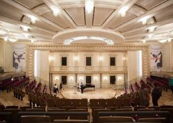
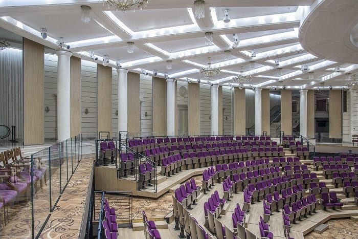
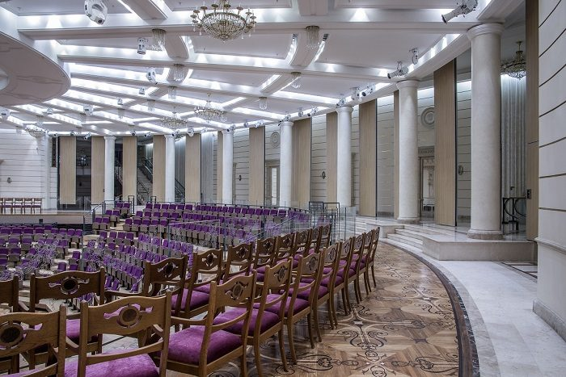
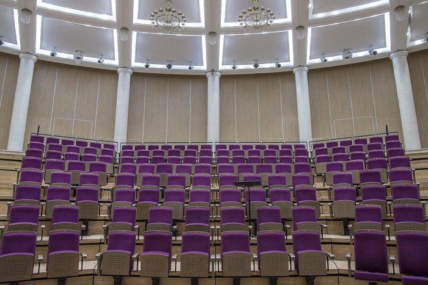
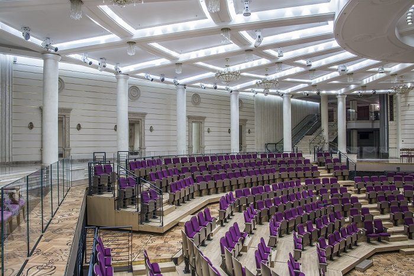

Раздвижные перегородки SmartWall в Большом Театре
Культура · Август 2020
С 2010 года компания SmartWall, разработчик раздвижных перегородок, продолжала работать и наблюдать за проектом нового многофункционального внутреннего пространства Бетховенского зала легендарного Большого театра.
После масштабной реставрации, завершенной в 2012 году, концерты здесь даются регулярно. На сегодняшний день внутреннее пространство зала обрело свой окончательный облик.
 |
 |
 |
Бетховенский зал – это новая концертная площадка Большого театра. Одна из главных ценностей зала – его акустика, благодаря которой его и стали использовать как площадку для концертов и репетиций. Он занимает одно из первых мест среди лучших концертных площадок столицы.
Раздвижные перегородки в Бетховенском зале
Акустические раздвижные перегородки для многофункционального зала удалось создать компании SmartWall. Бетховенский зал имеет ограниченную площадь, а звуковое давление в нем очень высокое (в нем проводятся самые разные мероприятия: от сольного выступления артистов до репетиций симфонического оркестра).
Дополнительная сложность – разноуровневое радиусное расположение перегородок – потребовала тщательной технической работы. Задача не из простых - и поэтому специалисты SmartWall отслеживали эффективность установленных конструкций на протяжении четырех лет.
За счет установленных перегородок SmartWall зал имеет возможность в считанные минуты становиться камерным, а также превращаться в площадку для репетиций, где одновременно могут настраивать инструменты 130 музыкантов. Система состоит из 32 секций (из них 4 - двупольные двери).
Установлена конструкция по дуге - каждая секция примыкает к соседней под углом примерно 4 градуса, а в середине установлен подиум. Вес каждой секции около 430 кг., а вес всей перегородки - более 13 тонн! Изнутри раздвижная перегородка отделана специальными звукопоглощающими панелями, поэтому звукоизоляция перегородки максимальная: 54 dB. Панели имеют комбинированную отделку с использованием обоев, шпона и зеркал с эффектом старения.
В результате длительной эксплуатации установленные перегородки SmartWall доказали надежность и эффективность конструкции.
История Бетховенского зала:
Бетховенский зал получил свое имя 18 февраля 1921 года в честь 150-летнего юбилея со дня рождения Людвига ван Бетховена. До революции это было помещение Императорского фойе, оформленное в традициях того времени.
Сегодня старинные интерьеры восстановлены и доступны ценителям: потолок староитальянской лепки, роскошные хрустальные люстры, стены, обитые атласом с вышивкой Однако он редко открывал свои двери широкой публике. Открытые концерты стали проходить здесь чаще только с середины восьмидесятых годов.
Первая значительная реставрация Бетховенского зала была проведена в семидесятые годы XX века. В ходе новой реконструкции 2009-2012 годов интерьеры Императорского фойе были полностью восстановлены, в том числе имперская символика, утраченная в советские годы.
Концертную площадку переместили в подземное помещение, которое находится под Театральной площадью. Современный Бетховенский зал прекрасно технически оборудован и обладает отличной акустикой.
Системы в проекте






Бесплатный замер
Нужна перегородка для вашего объекта?
Перезвоним, уточним задачу и подготовим расчёт. Можно прикрепить планировку или техническое задание.
+7 (499) 755-88-45